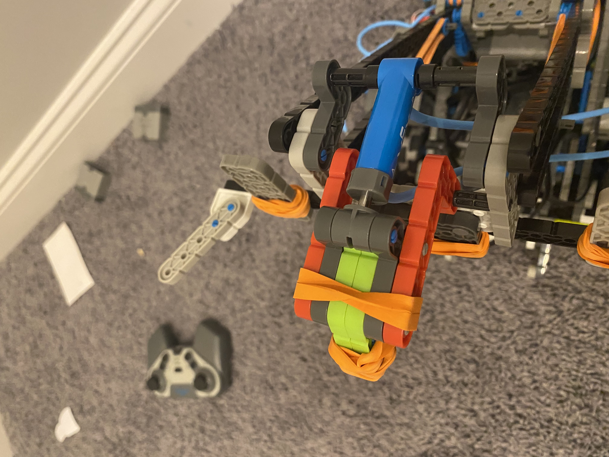
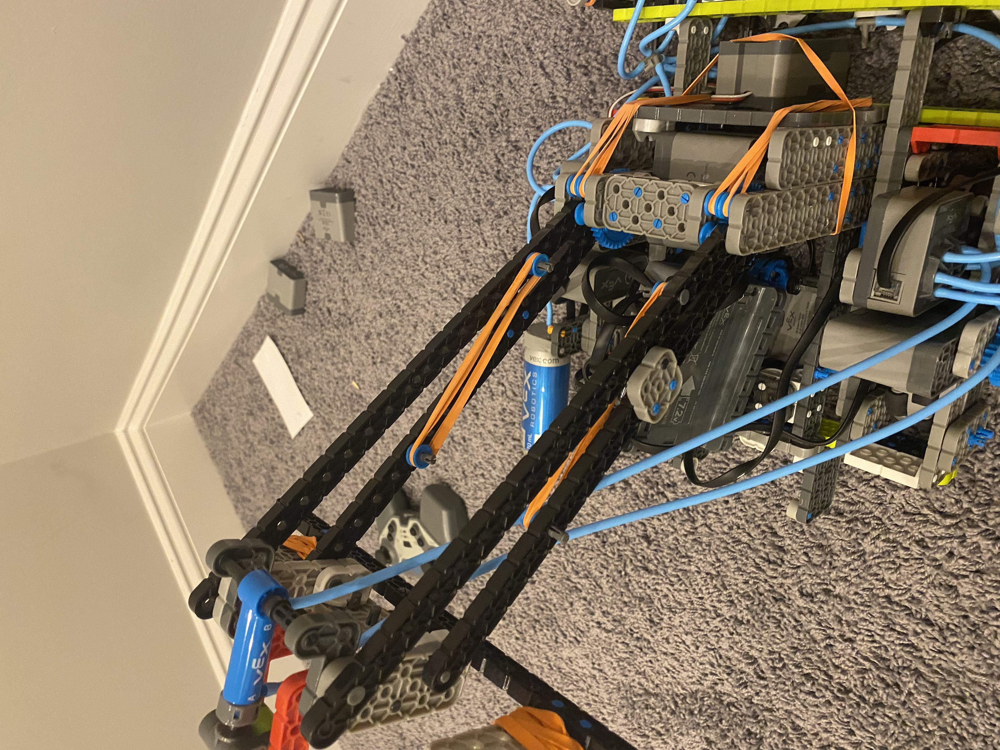
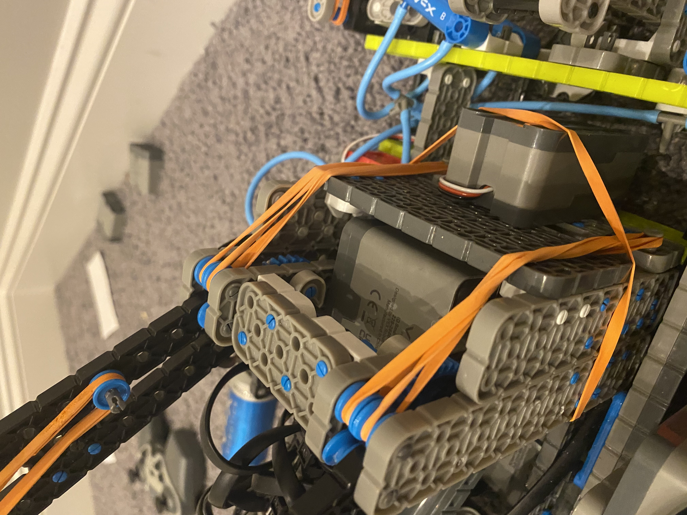

A beam arm is one of the most reliable, yet complex, mechanisms on a VEX IQ robot. It is the system that gives the rest of the robot purpose—without it, the robot is limited to basic stacking. A strong beam arm must be lightweight, compact, and consistent, while still being powerful enough to lift the heavy “cactus” onto the standoff.
1. What This Mechanism Is
The beam arm is designed to grab the beam through its center hole and lift it all the way up to place it onto the standoff, even when there is already a preloaded pin. This allows the robot to score significantly more points than stacking two- or three-color stacks alone.
2. Why This Design Works Well
- Capable of lifting to very high scoring heights
- Lightweight and efficient
- Uses only two motors
- Reliable for repeated lifts
- Leaves room for other mechanisms
- Does not interfere with the 180° mech arm
- Compact but powerful
3. Core Build Overview
- Uses a single pneumatic to grab the beam through the center hole, similar to a small clamp or single-finger grip.
- The lift is a four-bar mechanism, allowing the beam to stay straight while lifting to a very high position.
- The grabbing mechanism is tilted slightly backward, allowing extra height without increasing the length of the four-bar and risking size-limit issues.
- All four-bar links are built using 1×20 beams for strength and consistency.
- Beam aligners are mounted directly on the arm so the beam moves with the lift, avoiding unnecessary extra space.
- Uses a 5:1 torque gear ratio for lifting power.
- The gearbox is kept short (around 2×11 or 2×12) so it does not take up excessive vertical space.
- To save width, the two motors are stacked vertically instead of side by side. One side uses a 12-tooth to 60-tooth gear setup, while the other side uses a 12-tooth to 24-tooth to 60-tooth gear train. This keeps the same ratio while allowing the second motor to fit underneath the first.



4. Gearing & Power Setup
- Motor count: 2 motors
- Gear ratio: 5:1 torque
- Why this works: High-torque gearing keeps the beam arm smooth, controlled, and prevents motor overheating during repeated lifts.
5. Tuning Tips & Common Fixes
- Keep the beam arm as compact as possible.
- If more height is needed, first try adjusting the tilt of the arm.
- Add rubber bands gradually if extra lifting help is needed.
- Test, tune, and repeat for consistent performance.